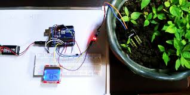
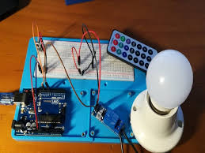
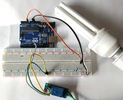

Zero2maker for guiding in the process of making this Project.

Components Used:-
1)Arduino Uno
2)Ultrasonic Sensor
3)LCD Screen
4)Breadboard
In this project we made a circuit using arduino uno, breadboard, ultrasonic sensor, lcd screen.In this project an object is brought near the ultrasonic sensor, then the LCD screen shows the measure of distance of the object from the sensor.

Components Used:-
1)Arduino Uno
2)Moisture Sensor
3)LCD Screen
4)Battery
5)Breadboard
In this project we made a system using arduino uno and moisture sensor, that measures the moisture of the soil and shows it on the LCD screen.

Components Used:-
1)Arduino Uno
2)IR Sensor
3)Remote
4)Battery
5)Breadboard
6)Bulb
In this project we made a system using arduino uno and IR sensor, In which when we point the remote towrds the IR sensor and click the button the bulb turns on and when we click the button again the bulb turns off.

Components Used:-
1)Arduino Uno
2)Light Sensor
3)Battery
4)Bulb
5)Breadboard
In this project we made a system using arduino uno and light sensor, In which the light automatically turns on/off by sensing if there is light outside or not, if there is light then the bulb will turn off, and if there is darkness then the bulb will turn on automatically.
If you have any suggestions for more projects on Arduino, Kindly send it to me through email or sms.
Zero2maker for guiding in the process of making this Project.

Github for helping in publishing this website.

W3schools.html for providing the necessary resources.